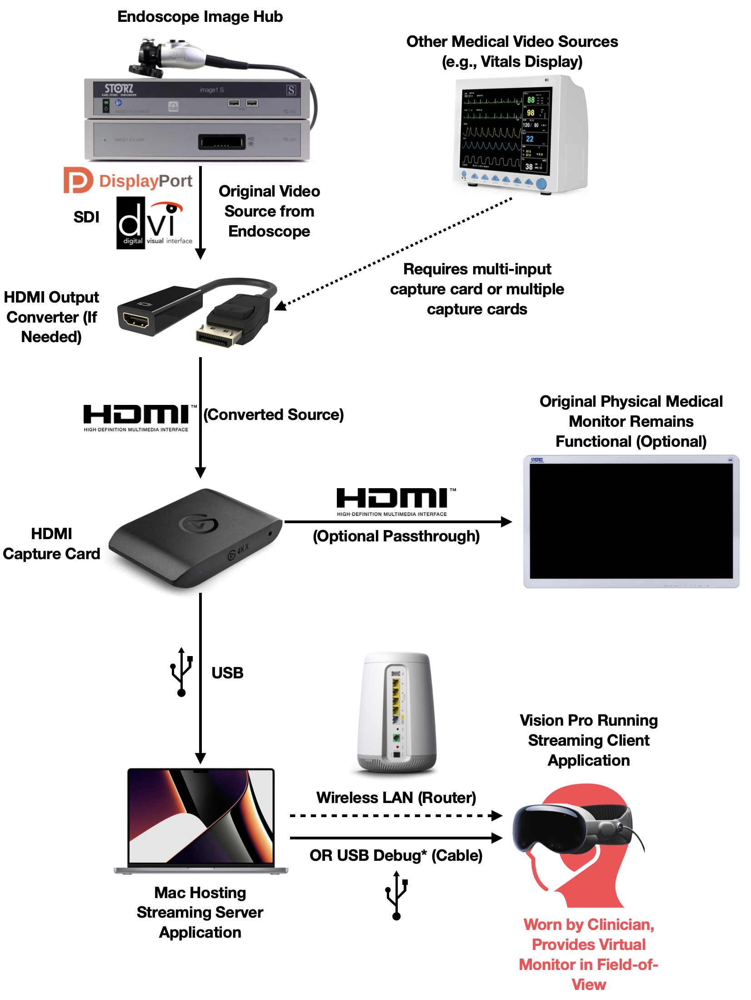

Objective: Incorporating augmented reality into surgical workflows can enhance surgeon performance by providing real-time feedback and improving interaction with monitors during image-guided procedures. This study explores using the Apple Vision Pro, a head-mounted AR device, to support such procedures, simplify the operating room, and improve situational awareness.
Design and Methods: We developed and iteratively refined a prototype system with input from practicing surgeons to iteratively assess and refine its clinical usability.
Engineering and Results: Our system, CARE, uses a LAN video-casting stack to stream video from image-guided surgery equipment like the Karl Storz IMAGE1 S™, achieving latencies under 71 ms for 1080p and around 200 ms for 4K - outperforming many existing solutions.
Discussion: The Apple Vision Pro's passthrough, hand, and eye tracking features make it a strong candidate for surgical use. Our minimum viable product lays the groundwork for clinical deployment.
Conclusion: The technology stack shows promising competitive latency. Future work will involve operating room clinical trials for further usability findings.
The CARE system architecture streams video from surgical equipment through a capture card to a streaming server, which transmits to the Apple Vision Pro over a controlled local network. This setup minimizes latency while maintaining high video quality for critical surgical decision-making.
Video streaming pipeline
Detailed system architecture
Based on interviews with nine anesthesiologists and three surgeons, we identified three core interaction features that address the challenges of fixed monitor setups and the need for dynamic adjustments during procedures:
The surgeon selects a window for movement, and a handle appears at the bottom edge, enabling a pinch-and-drag action to reposition the window within the space.
When the surgeon gazes at the bottom corners of a window, a curved handle appears. By pinching and moving hands outward diagonally, they can increase the scale. Moving hands inward scales the view down.
Surgeons can reference a selection of monitors at the bottom of their vision, stare to select a monitor, and the selected monitor will be displayed in front of them—crucial when hands are occupied.
Conceptual sketches of AR interaction features for surgical workflows
Our system achieved low-latency video streaming with <71ms for 1080p wireless and ~54ms for 1080p wired, outperforming several existing AR surgical systems (Ruijters: ~300ms, Askeland: ~285ms).
| Video Format | Connection Mode | Average Latency (ms) |
|---|---|---|
| 1080p | Wireless | 70.77 |
| 4K | Wireless | 198.8 |
System latency measurements suitable for real-time surgical applications
The Apple Vision Pro demonstrates significant potential for enhancing surgical workflows through AR. Our system achieved sub-100ms latency for 1080p video, critical for clinical decision-making. The hand gesture and eye-tracking interactions address clinician needs for flexible, customizable interfaces while reducing reliance on assistants.
Clinical Benefits: Improved ergonomics through customizable monitor placement, reduced sterilization breaches via virtual monitors, enhanced situational awareness with real-time information overlay, and simplified operating room setup.
Future Work: Clinical testing in operating rooms with our partners Dr. Paderno and Dr. Aalami, focusing on long-term comfort, performance validation in varying environments, multi-source integration, and advanced features like 3D anatomical overlays.
We thank our clinical partners Dr. Alberto Paderno and Dr. Oliver Aalami for their surgical insights. We are grateful to the University of Washington (Remote Hub Labs), Stanford University (Spezi Labs), UW CoMotion, and the NSF I-Corps Hub Northwest Regional program for their support.
We acknowledge the open-source communities behind Ensemble, OBS, and DeskPad, whose foundational work enabled our Vision Pro streaming workflow.
This project builds on Dr. Oliver Aalami's original 2016 work investigating Google Glass for intraoperative monitoring, delivering a modern reassessment of AR feasibility in image-guided surgery.
@article{wang2025care,
author = {Wang, Ze Xia Lucas and De León, Marianny and Zhou, Boyang and Kalisi, Sai Jayanth and Phou, Keith Meng and Han, Jennifer and Chen, Yijun and Betty, Alicia and Aalami, Oliver and Paderno, Alberto and Hussein, Rania},
title = {CARE - Clinician Augmented Reality Environment: Design and Technical Feasibility of Apple Vision Pro for Image-guided Surgeries},
journal = {},
year = {2025},
}